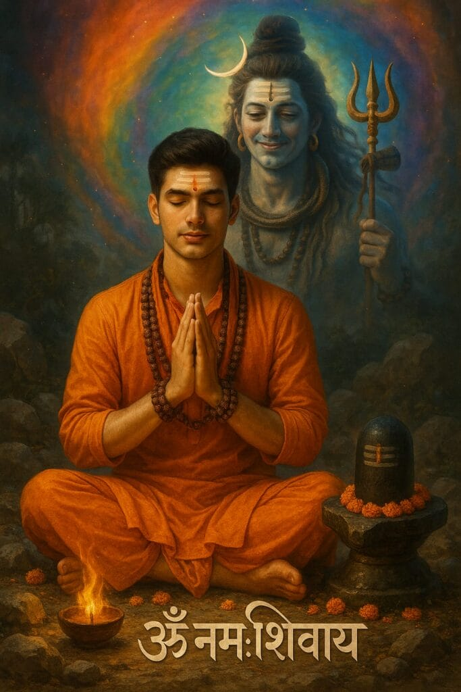
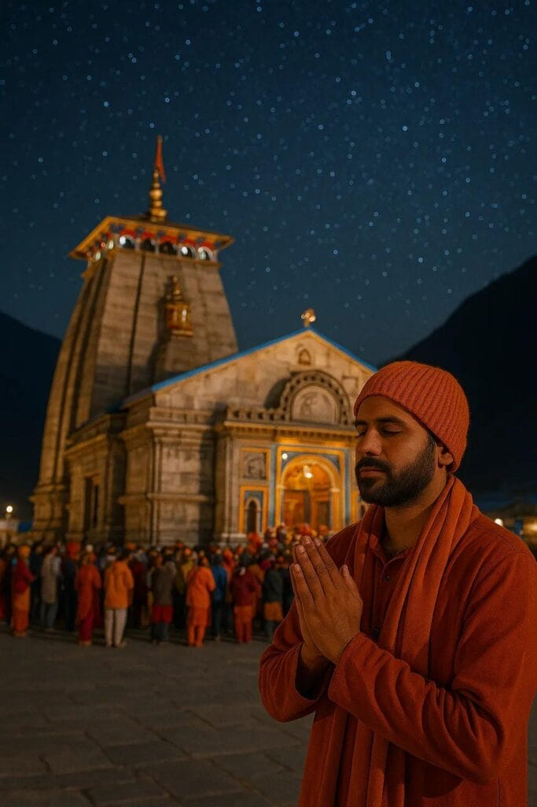
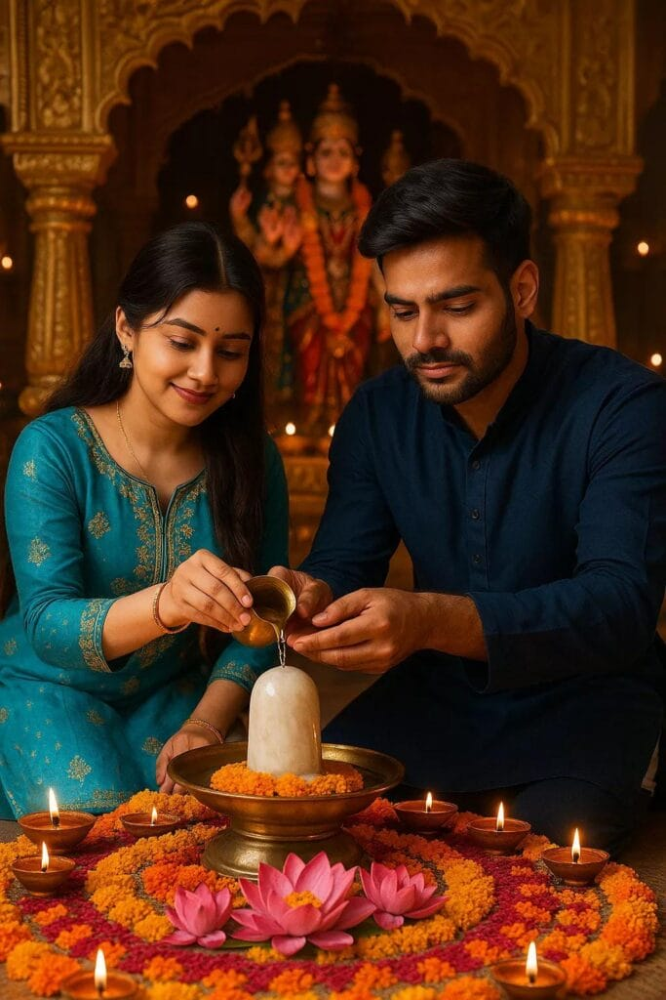

Friends, at this time, photos created using ChatGPT are going extremely viral on platforms like Instagram, Facebook, and other social media channels. In line with this trend, the sacred month of Sawan is starting from 13th July 2025.
In this post, I will show you how to create your own photo with Lord Mahadev (Shiva) and also provide special Mahadev ChatGPT prompts that you can use.
Want more awesome prompts?
Join our community and get the latest viral prompts daily.
Follow on InstagramI’ve put a lot of time and effort into creating these prompts so you can generate high-quality photos with Lord Shiva, specially themed for the holy month of Sawan.
Chatgpt Mahadev Ai Photo Editing Prompts

Just One Click on Prompts To Copy Full Prompt.
Just One Click on Prompt To
CopyFull Prompt.



Who Are These Prompts For?
These Mahadev prompts are made for everyone, including:
- Boys
- Girls
- Couples
For each prompt, you’ll also find a demo image so you can get an idea of what your final photo will look like.
How to Create a Mahadev ChatGPT Image?
Follow these simple steps to create your own stunning image with Lord Shiva using ChatGPT:
Step-by-step Guide:
- Choose a Prompt
- From the list above, pick any Mahadev-themed prompt that you like.
- Just click once on the prompt; it will be automatically copied.
- Go to ChatGPT
- Click on the ChatGPT button provided below the prompt.
- You’ll be redirected to chat.openai.com.
- Paste the Prompt
- Paste the prompt you copied into the chat.
- Upload your photo (with your face clearly visible).
- Customize the Prompt (Optional)
- If you want to change any details like your name, age, or clothes, you can do that in the prompt before proceeding.
- Generate the Photo
- Click on Next or Submit.
- ChatGPT will begin generating your image.
- In about 10–30 seconds, your Mahadev-themed photo will be ready.
- Download the Photo
- Once the image is generated, simply download it to your device.
Make Your Normal Photo Divine ChatGPT Prompts For Mahadev
This way, you can turn any regular photo of yours into a beautiful, spiritual image with Lord Shiva, and that too absolutely free.
In this post, we’ve tried to bring you the most trending Mahadev ChatGPT photo editing prompts. If you feel that any prompt is missing or you have a request, just leave a comment—I will respond to your query as soon as possible.
Create, share, and celebrate the holy month of Sawan with your own Mahadev-themed images.
Thank you for your love and support!